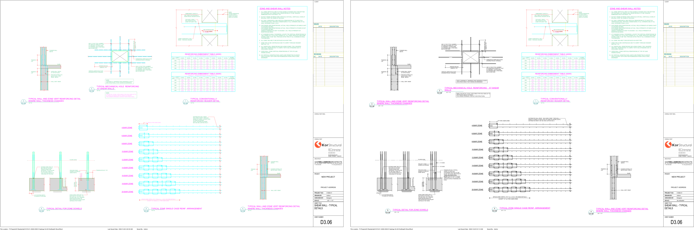

The standard details drafters place from Revit now come from your masters: your CAD typical-detail blocks and your Concrete Tower R24 template, in one file. Where a sheet of yours held a Revit copy of a CAD detail, it now holds the detail drawn from your CAD block, so a change you make in CAD is the one everybody gets. Everything else on your sheets is yours, untouched. This page is what you need to look at; the detail behind it is in the folder at the end.
| What | How many | Where it came from |
|---|---|---|
| Your own drafting views | 550 | Your Concrete Tower R24 template, every one that sits on one of your sheets (550 of 550 on a sheet). |
| Details from your CAD blocks | 190 + 41 | All 190 typical details on the big sheet, brought in by the CAD Detail button; 41 more copies of them fill positions on your sheets. |
| Your notes and schedules, placeable | 117 | A detail-view copy of each of your 118 legends (one is empty), named "<legend> - DETAIL VIEW", printing identically to the legend. The palette cannot place a legend; it can place these. |
| Details drafters had, from your off-sheet views | 10 | 12 details the old catalogue offered exist in your templates only as views on no sheet; the identical ones were copied in (three numbers shared one drawing). |
| Details drafters had, from the August R25 file | 53 | 54 details the old catalogue offered exist only in the August R25 file (37 wood, 16 steel, 1 concrete). Each was brought in from that file by the CAD Detail button and looked at beside the old picture and the R25 view: the same drawing. Two old names match nothing there (an empty column schedule; a view titled only "TYPICAL DETAIL"). |
| Sheets and legends | 90 · 118 | Yours, as in the template. |
| The file | \\Kor-fs01\Drafting\KOR-Standards\template\MASTER\KOR-Standard-Details-R24.rvt Revit 2024. The previous master (KOR-Standards-Master-R25.rvt) stays beside it, untouched. | |
How it was checked: every one of the 190 printed from Revit beside its CAD plot under KOR.ctb and looked at; 181 of 190 match word for word and line for line, 9 differ in text only (font, the diameter symbol, spacing); 190 of 190 dashed at CAD's length.

| Question | What we found | Your answer |
|---|---|---|
| The 55 that differ | CAD and Revit versions drawn differently, one page each (folder file 1). | CAD right / Revit newer / both wrong, per page. |
| The Revit font for CAD's SHX text | 9 of the 190 differ in text only. One, D503-13 (romans.shx), prints thin and crowded in Revit: worth fixing in the CAD block itself. | Pick the font; say whether D503-13 is redrawn. |
| One title moved | On D3.05, S3.05 and 1E3.05, "Diagonally reinforced header section" ran into detail 1 at your title position (the CAD drawing is a little larger), so it was moved under its drawing. | Keep it, or say where it goes. |
| The wood "framing over" sheet | Decided as assumed, below. | Confirm, or overrule. |
| An old firm name | Your off-sheet view "Typical Shearwall Details" still reads "confirm with JOHN BRYSON & PARTNERS" at the mechanical-hole note; the old catalogue's version read "KOR STRUCTURAL". | Fix the view in your template. |
| Three R25 views with overlapping text | "DEEP BEAM POCKET DETAIL 1", "DEEP BEAM POCKET DETAIL 2" and "ENTRY POST DETAIL" have their notes drawn over one another in the August R25 file itself, so they read the same way in the new file. | Redraw them, or say they are not standards. |
Ian has settled how wood framing is drawn. His words, 25 October:
"I think the issue is that until recently we were told woodframe couldn't be done in revit" · "If we CAN then 2D cad is redundant" · "I don't want THREE versions ... make some decisions and we simply note them as assumed and need confirmation."
So framing plans show modelled members (beams, joists, posts, hold-downs, walls), with 2D for annotation only. Standard details, the typical sections and connections, stay 2D and are not affected. For the "Level N showing Level N+1 framing over" sheet the office now has one way, recorded on 26 October as assumed with your name against it: a ceiling plan of level N carries the framing over, beside the engineering plan of level N+1, two plan views a sheet, at 1/8" = 1'-0" (the scale of the office concrete plans); the view type is ## - WD_STRUCTURAL WITH FRAMING OVER and the per-level templates ## - WD_Structural with Framing Over Level N, the names in your Wood Framing View Setup (July 2025), to be generated into the office template; the naming prefix is "## -" throughout. That is Edgar's make (31165-01) under your own names, chosen over Sherwood's (two plans of a foundation view type at 3/16", 21 per-level templates) and over the standard file's S2.13, which is legends with no plan view.
| Limit | Where you'd see it |
|---|---|
| Small circles print as many-sided polygons | Revit's PDF print, not the conversion: the file holds true circles. Bolt holes in D201-07, about 3 mm on paper. |
| Dense hatch in a thin band prints solid | 4 details: D201-07 and D503-15 (HSS walls), D502-30 and D502-31 (paver band at slab level). |
| Symbols inside a linetype | The W.W.M. line's X marks are not drawn in Revit; one line in D504-20. |
| Placing in Revit 2026 | The file is Revit 2024. A drafter in 2026 waits about two minutes the first time the palette places a detail after a template update (a message says so); after that a placement takes seconds. No prompt; the file is never changed. |
One folder, nothing attached: \\Kor-fs01\Drafting\KOR-Standards\for-review\2026-10-26 Nelson standards package